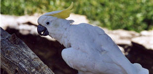

Le cacatoès à huppe jaune appartient à la famille des "psittacidés" qui compte 200 espèces. On le reconnaît à sa crête érectile. Très populaire, il peut apprendre à parler. Sa voix est très puissante.
|  |
|
Où vit-il ? C'est un oiseau tropical, il est donc introuvable en Europe à l'état sauvage. Le cacatoès vit aux Philippines et en Australie, ainsi qu'en Nouvelle-Zélande où il a été introduit dans les années 20 ; il est également présent sur l'île de Sulawesi, à l'est de Bornéo, en Indonésie.
Combien en reste-il aujourd'hui ? La population dans la nature ne dépasserait pas 1000 individus. L'espèce, déjà disparue de plusieurs grandes îles telles que Luzon, Panay, Cebu et Leyte, ne survit plus en nombre significatif que sur l'île de Palawan, aux Philippines. En captivité, les effectifs s'élèveraient à une dizaine de milliers.
Un animal domestique de plus en plus apprécié : Tout comme les perruches et les perroquets, ils sont recherchés pour tenir compagnie ! Leur domestication entraîne une diminution des effectifs vivant à l'état sauvage. La déforestation de leur habitat naturel, ajouté au commerce excessif, rend la situation particulièrement critique.
A savoir : Oiseau bruyant et très visible, le cacatoès utilise sa crête comme signal de communication ou afin d'attirer l'attention. C'est aussi sa manière de séduire.